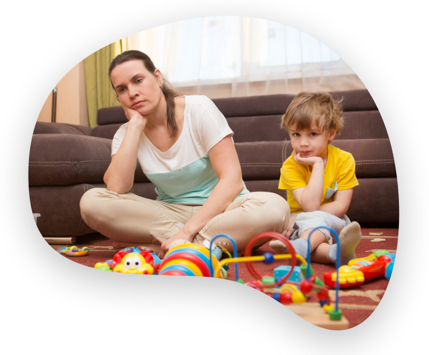

Скажите честно
Скажите честно, у вас тоже от простой детской просьбы «давай поиграем» включается невероятно яркая гамма чувств?
Усталость
«Боже, я и так ничего не успеваю...»

Чувство вины
«Боже, я и так ничего не успеваю...»
Скука
«Сейчас опять придется с унылым лицом катать эти машинки...»